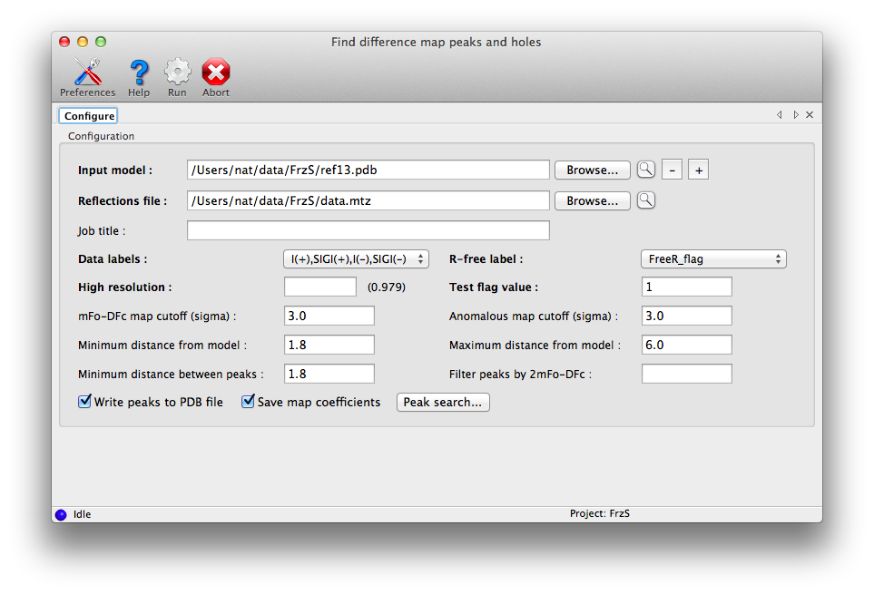
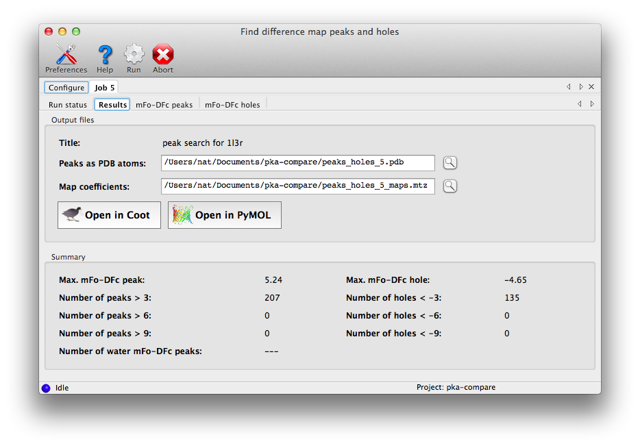

Finding and analyzing difference map peaks
phenix.find_peaks_holes is a utility for identifying points of interest in
difference maps, typically at the end of refinement. It will calculate an
mFo-DFc map and locate peaks and holes, plus anomalous map peaks (if anomalous
data are provided) and flagging of waters with suspiciously high mFo-DFc
values. This information may be used to improve the model, especially in the
addition of solvent and small ions.
The program requires only a PDB file and data (including R-free flags). The
default options should be sufficient for most cases, although for very large
structures or especially noisy maps, you may find it helpful to increase the
sigma cutoff.

By default, peaks which overlap with the input atoms (within a cutoff distance)
will not be included. If you want to find all peaks, set the minimum
peak-model distance to zero. Additional options are available by clicking the
"Peak search" button.
On the command line, the minimal input is simply the paths to your model and
data files (column labels may need to be specified if the choice is ambiguous).
Running the program without arguments will print out a summary of available
options, which are also listed below.

A summary tab will appear at the end of the run with peak counts, plus output
files and buttons to view them.
By default the program will write a PDB file containing up to five "chains",
all with atoms labeled UNK:
- A: mFo-DFc peaks (positive).
- B: mFo-DFc holes (negative)
- C: anomalous map peaks
- D: waters in mFo-DFc peaks
- E: waters in anomalous peaks
The program will also write the 2mFo-DFc, mFo-DFc, and anomalous (if available)
maps. Additional tabs will display each type of result in a list;
clicking these items will recenter the view in Coot and/or PyMOL on the
selected point.
- map_cutoff = 3.0
- anom_map_cutoff = 3.0
- include_peaks_near_model = False By default, the program will only display peaks that map to points outside of the current model, ignoring those that overlap with atoms. Setting this option to True is equivalent to specifying a distance cutoff of zero for the filtering step.
- wavelength = None Optional parameter, if defined this will cause all atoms to be treated as anomalous scatterers using the standard Sasaki table to obtain theoretical fp and fpp values. Only really useful if the Phaser LLG map is being used for the anomalous map.
- filter_peaks_by_2fofc = None If this is set, peaks outside 2mFo-DFc density at the cutoff will be discarded. (This does not apply to the analysis of solvent atoms.) Holes will not be changed.
- use_phaser_if_available = True If True, and Phaser is installed and configured, an anomalous LLG map will be used in place of the simple anomalous difference map. The wavelength should be specified for this to be maximally useful.
- write_pdb = True
- write_maps = True
- output_file_prefix = peaks_holes
- job_title = None Job title in PHENIX GUI, not used on command line
- input
- sequence = None
- scattering_table = wk1995 it1992 *n_gaussian neutron electron
- wavelength = None
- energy = None
- use_experimental_phases = False
- skip_twin_detection = False
- twin_law = Auto Enter twin law if known.
- xray_dataScope of X-ray data and free-R flags
- file_name = None
- labels = None
- high_resolution = None
- low_resolution = None
- twin_law = None
- outliers_rejection = True Remove basic wilson outliers , extreme wilson outliers , and beamstop shadow outliers
- french_wilson_scale = True
- sigma_fobs_rejection_criterion = None
- sigma_iobs_rejection_criterion = None
- ignore_all_zeros = True
- force_anomalous_flag_to_be_equal_to = None
- convert_to_non_anomalous_if_ratio_pairs_lone_less_than_threshold = 0.5
- french_wilson
- max_bins = 60 Maximum number of resolution bins
- min_bin_size = 40 Minimum number of reflections per bin
- r_free_flags
- file_name = None This is normally the same as the file containing Fobs and is usually selected automatically.
- label = None
- required = True Specify if free-r flags are must be present (or else generated)
- test_flag_value = None This value is usually selected automatically - do not change unless you really know what you're doing!
- ignore_r_free_flags = False Use all reflections in refinement (work and test)
- disable_suitability_test = False
- ignore_pdb_hexdigest = False If True, disables safety check based on MD5 hexdigests stored in PDB files produced by previous runs.
- generate = False Generate R-free flags (if not available in input files)
- fraction = 0.1
- max_free = 2000
- lattice_symmetry_max_delta = 5
- use_lattice_symmetry = True
- use_dataman_shells = False Used to avoid biasing of the test set by certain types of non-crystallographic symmetry.
- n_shells = 20
- pdb
- file_name = None Model file(s) name (PDB)
- monomers
- file_name = None Monomer file(s) name (CIF)
- maps
- map_file_name = None A CCP4-formatted map
- d_min = None Resolution of map
- map_coefficients_file_name = None MTZ file containing map
- map_coefficients_label = None Data label for complex map coefficients in MTZ file
- find_peaks
- use_sigma_scaled_maps = True Default is sigma scaled map, map in absolute scale is used otherwise.
- grid_step = 0.6 Grid step for map sampling
- max_number_of_peaks = None
- map_next_to_model
- min_model_peak_dist = 1.8
- max_model_peak_dist = 3.2
- min_peak_peak_dist = 1.8
- use_hydrogens = False
- peak_search
- peak_search_level = 1
- max_peaks = 0
- interpolate = True
- min_distance_sym_equiv = None
- general_positions_only = False
- min_cross_distance = 1.8
- min_cubicle_edge = 5